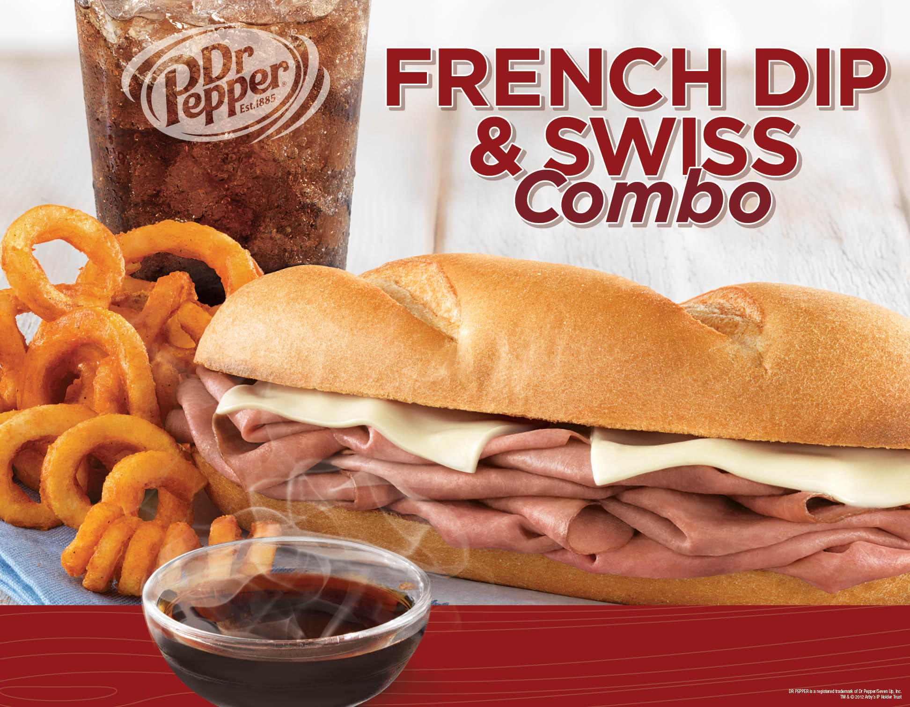
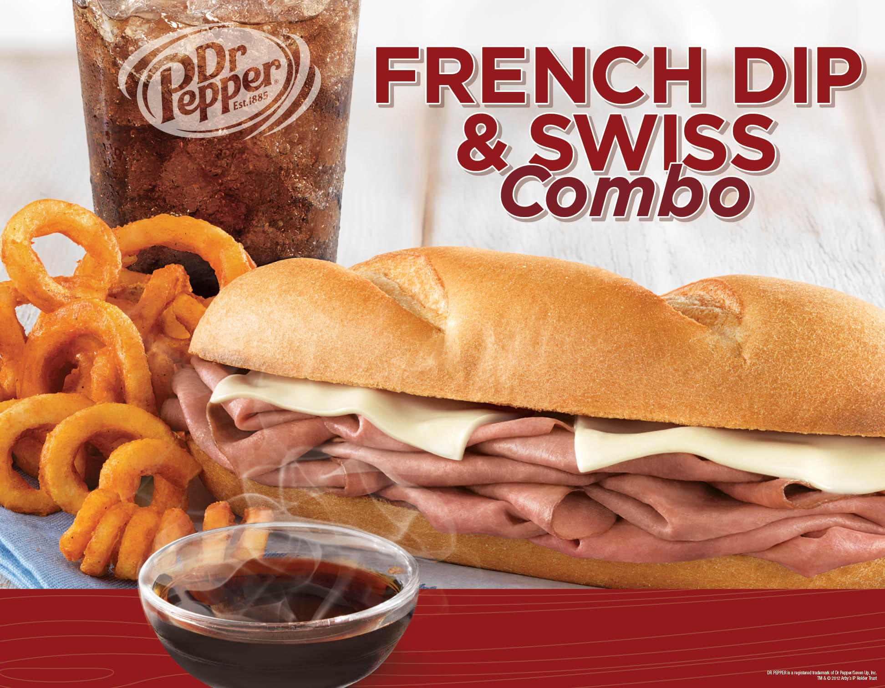

Arby's French Dip & Swiss by Arby's | Food Review
January 13, 2016
Arby's French Dip & Swiss
Video Review
Arby's French Dip and Swiss by Arby's | Food Review, on YouTube
January 13, 2016
Arby's French Dip & Swiss
Arby's French Dip and Swiss by Arby's | Food Review, on YouTube